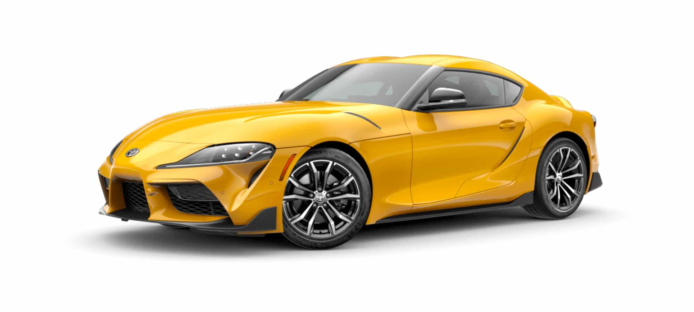
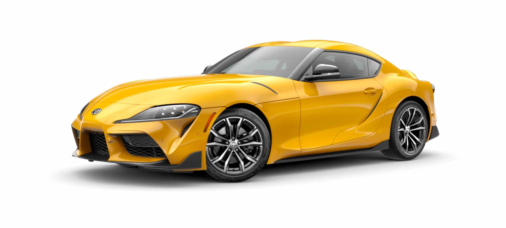

Toyota Supra (2021)
 

The Toyota Supra (Japanese: トヨタ・スープラ, Hepburn: Toyota Sūpura) is a sports car and grand tourer manufactured by the Toyota Motor Corporation beginning in 1978. The name "supra" is derived from the Latin prefix, meaning "above", "to surpass" or "go beyond". The initial four generations of the Supra were produced from 1978 to 2002. The fifth generation has been produced since March 2019 and went on sale in May 2019. The styling of the original Supra was derived from the Toyota Celica, but it was longer.
Manufacturer: Toyota- Production: April 1978 – August 2002 March 2019 – present
- Assembly: Japan
- Designer: Yaguchi
- Colors Available: Grey, Black, White, Yellow
- Price: R 153,000 (Payment over 24 months available)